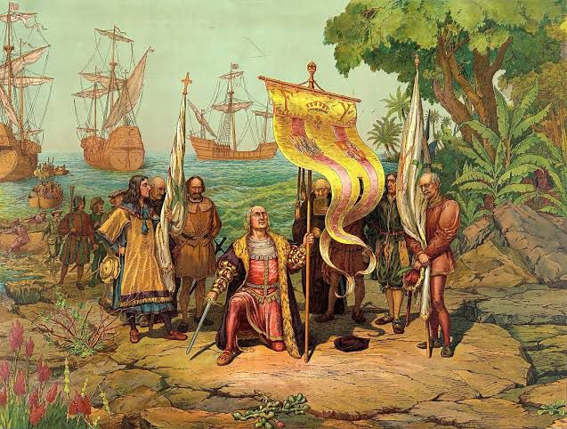

Romanização da Península Ibérica
|
A romanização da Península Ibérica foi um processo complexo e multifacetado, iniciado com a chegada dos romanos no século III a.C. e concluído com o domínio total em 19 a.C. Antes da chegada dos romanos, a península apresentava uma diversidade racial significativa, com populações celtas, iberas e outros grupos. A Bética, correspondente à atual Andaluzia, foi a província mais rapidamente romanizada, enquanto outras regiões demoraram mais para assimilar a cultura romana.
|

|
A introdução do latim na Península Ibérica começou no sul da Espanha, na Bética, por volta do século III a.C. Contudo, o latim só se popularizou na Lusitânia, atual Portugal, durante os reinados de Júlio César e Augusto. Os primeiros contatos entre os romanos e os lusitanos ocorreram em 193 a.C., quando os lusitanos invadiram a Bética, dando início a uma série de conflitos que se estenderam até 25 a.C. Durante esse período, a resistência lusitana foi gradualmente vencida, culminando na completa romanização da região.
A influência romana na Península Ibérica foi profunda e abrangente. A Bética, devido à sua rápida assimilação, tornou-se um centro importante de cultura romana. Em contraste, outras regiões, como a Lusitânia e a Tarraconense, demoraram mais para incorporar plenamente os aspectos culturais, administrativos e linguísticos romanos. O processo de romanização não foi uniforme, variando conforme a resistência local e a presença de forças militares romanas.
Um aspecto importante da romanização foi a introdução e a difusão do latim. A língua latina começou a se estabelecer de forma significativa a partir da conquista romana e se tornou a língua dominante na administração, no comércio e na vida cotidiana. O latim na Península Ibérica evoluiu em contato com as línguas locais, resultando em diversas mudanças fonéticas e morfológicas. Por exemplo, na área galego-portuguesa e na área vasco-gasca, ocorreram diferentes tipos de nasalação que afetaram os sons precedidos por uma consoante nasal. Um exemplo dessa evolução linguística relacionada ao substrato basco inclui a perda do /n/ intervocálico e a transformação do /n/ em /e/. Existem também paralelos linguísticos entre o galego-português e o basco, como a substituição de /au/ por /of/ em alguns dialetos portugueses e também no basco.
A romanização teve um impacto duradouro na Península Ibérica, moldando não apenas a língua, mas também a cultura, a administração e a estrutura social das regiões conquistadas. Esse processo estabeleceu as bases para a formação das futuras nações de Portugal e Espanha, deixando um legado que ainda é visível nas línguas e nas tradições culturais da península. A romanização da Península Ibérica exemplifica a capacidade do Império Romano de integrar diversas culturas sob um sistema unificado, promovendo a disseminação da língua e da cultura romana em toda a Europa Ocidental.